Roteiro de personas · teste real
Como cada pessoa usa o canal
Duas jornadas reais, do começo ao fim, com prints capturados por um teste automatizado que percorreu o portal de verdade. Serve para o Comitê e para quem valida o produto entenderem, em minutos, o que a pessoa vê e sente em cada passo.
Ana — quer denunciar sem se expor
29 anos · analista · colaboradora atual
- Situação
- Sofre assédio moral recorrente de um gestor em reuniões.
- Objetivo
- Registrar o que aconteceu de forma anônima e com segurança.
- Medo
- Ser identificada e sofrer retaliação; não saber por onde começar.
Fluxo: registrar manifestação anônima
{kind=link}
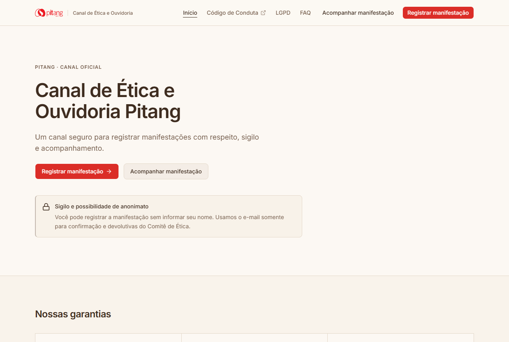
1 Chega na home
O propósito, as garantias de sigilo e o botão de ação aparecem de cara. A logo Pitang em vermelho ancora a confiança institucional.
{kind=link}
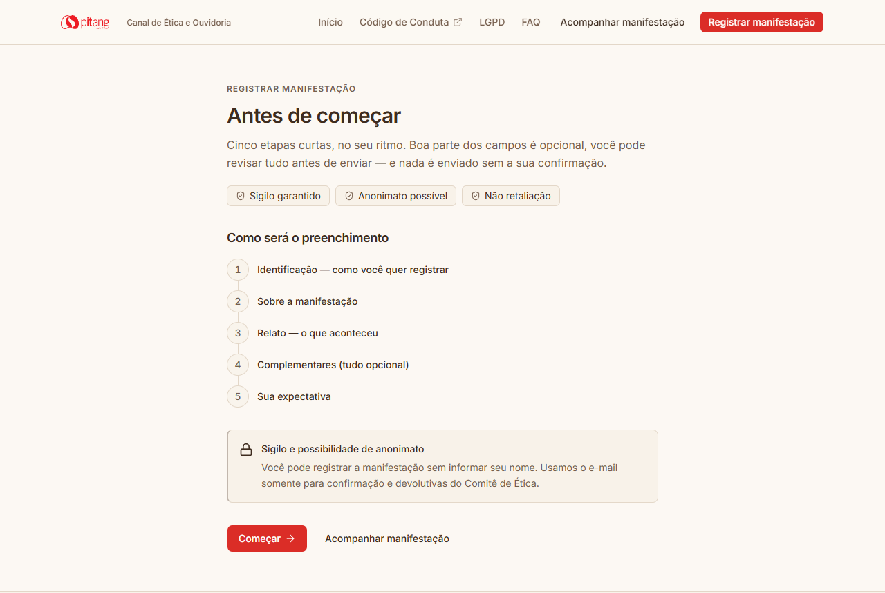
2 Entende o caminho
Antes de pedir qualquer dado, o canal mostra as cinco etapas e reforça: dá para revisar tudo, nada é enviado sem confirmar.
Por quê: reduzir a ansiedade de "no que estou me metendo" antes do primeiro campo.
{kind=link}
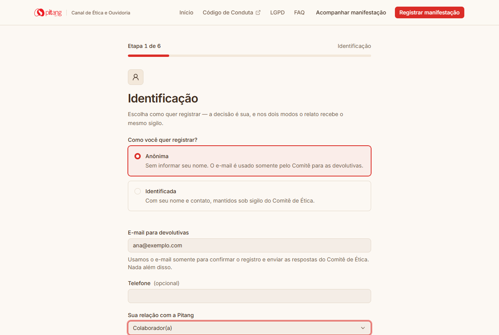
3 Etapa 1 · escolhe ser anônima
Seleciona "Anônima". O e-mail é pedido uma vez só, com o motivo colado ao campo: serve apenas para as devolutivas do Comitê.
Craft: um ícone-âncora e a barra "Etapa 1 de 6" situam sem sobrecarregar.
{kind=link}
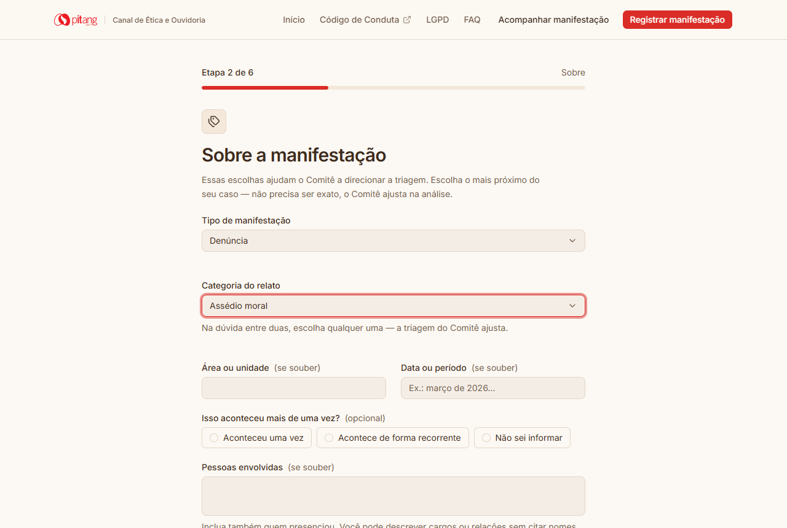
4 Etapa 2 · classifica sem pressão
Escolhe tipo e categoria. A frase "na dúvida, escolha qualquer uma — o Comitê ajusta na triagem" tira o peso do acerto jurídico.
{kind=link}
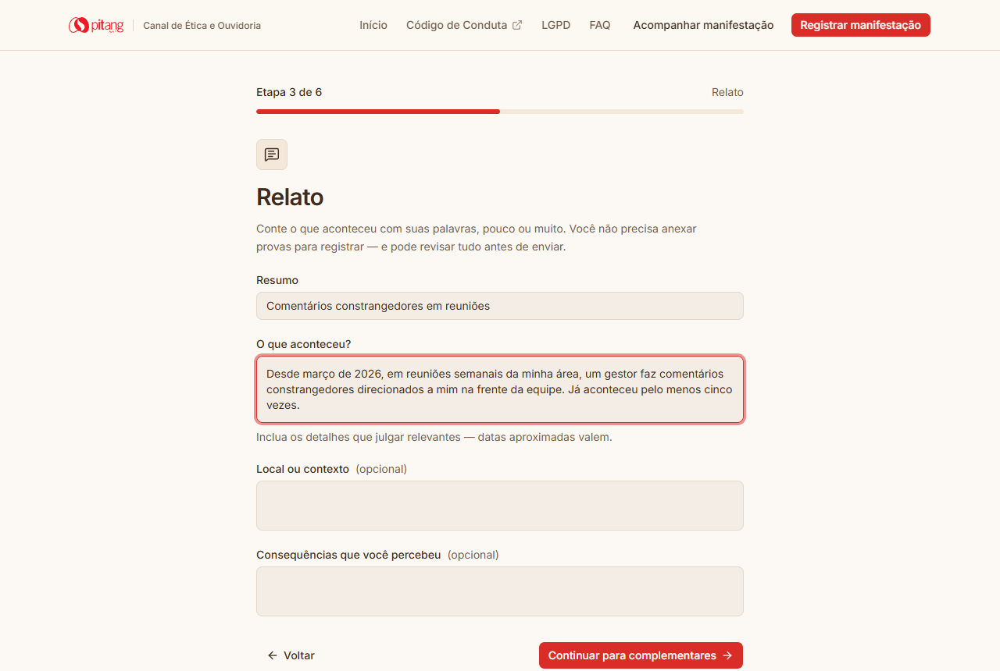
5 Etapa 3 · conta o que aconteceu
O relato é o coração. "Você não precisa anexar provas para registrar" e "datas aproximadas valem" convidam a escrever no seu ritmo.
{kind=link}
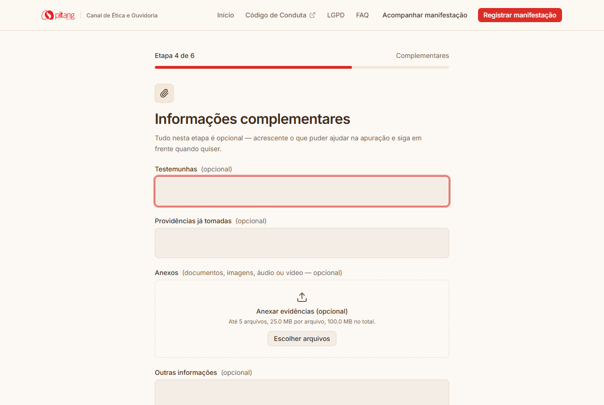
6 Etapa 4 · complementos (opcional)
Testemunhas, providências e anexos — tudo opcional e sinalizado. Ana segue direto: não é obrigada a nada aqui.
{kind=link}
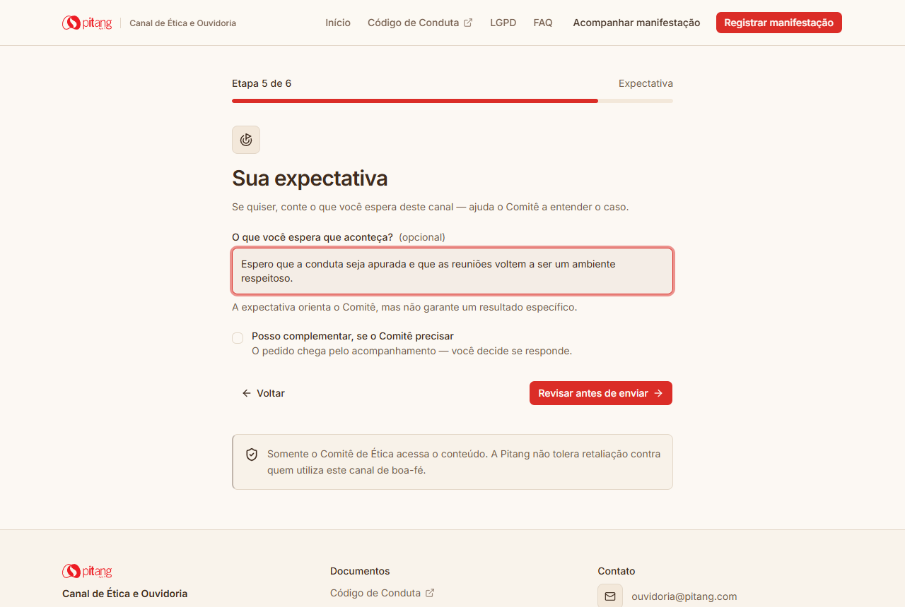
7 Etapa 5 · diz o que espera
Um campo opcional para a expectativa, com o aviso honesto de que orienta o Comitê mas não garante um resultado específico.
{kind=link}
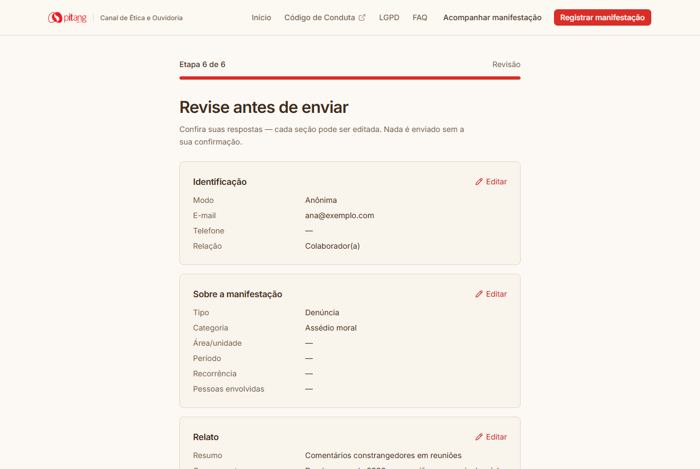
8 Revisa e aceita os Termos
Todas as respostas aparecem agrupadas e editáveis. O envio só habilita após o aceite explícito dos Termos (checkbox).
{kind=link}
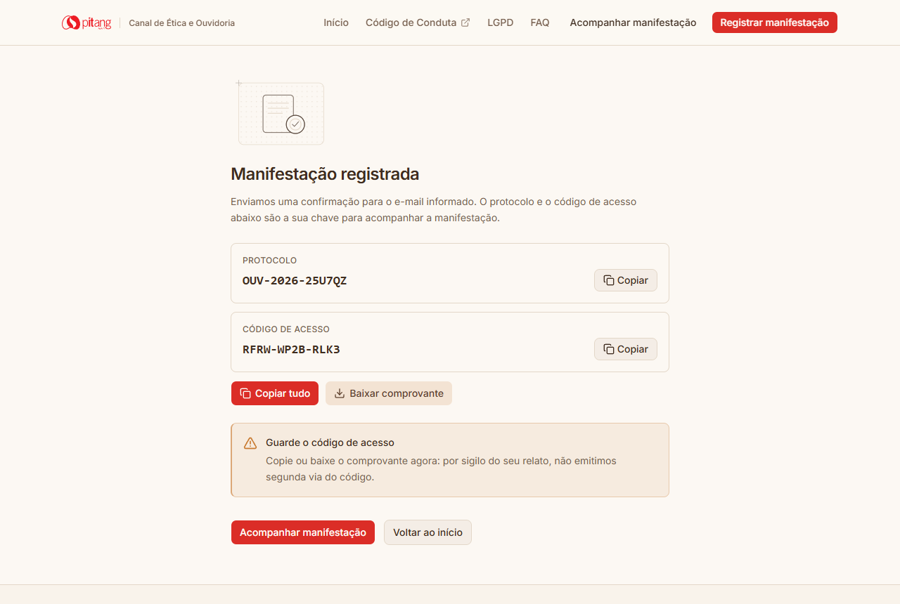
9 Recebe protocolo e código
Registro confirmado. Um botão "Copiar tudo" guarda protocolo e código de uma vez, e o comprovante pode ser baixado. O aviso é acolhedor, não ameaçador: "por sigilo do seu relato, não emitimos segunda via".
Por quê: o momento de maior alívio não pode virar ansiedade — guardar a chave tem que ser um clique.
Carlos — quer saber como está sua manifestação
41 anos · ex-colaborador
- Situação
- Registrou uma manifestação semanas atrás e guardou o comprovante.
- Objetivo
- Consultar o andamento sem criar conta, de qualquer dispositivo.
- Medo
- Ter que digitar um código longo e errar; achar que "sumiu".
Fluxo: acompanhar manifestação
{kind=link}
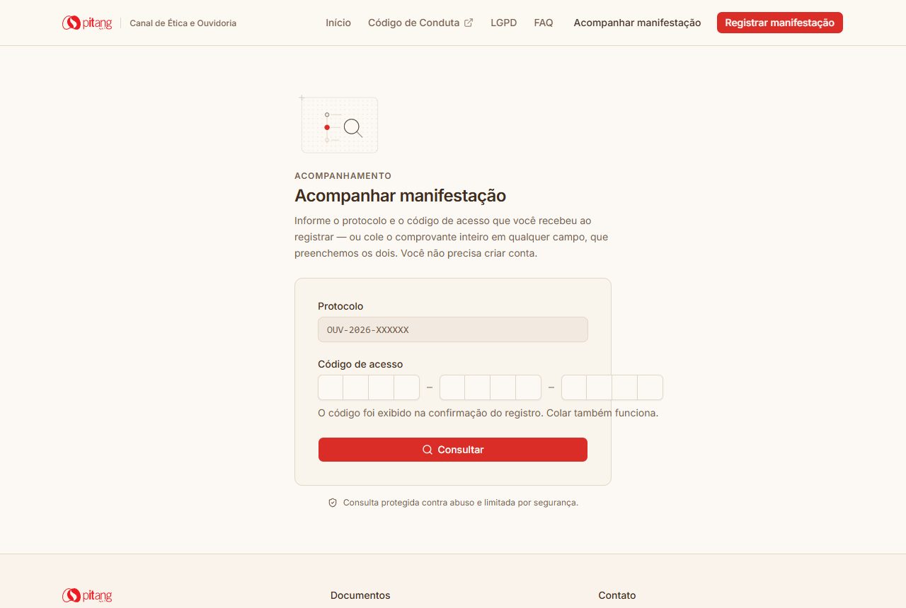
1 Abre "Acompanhar"
Só dois campos: protocolo e código. Sem login, sem conta. O texto avisa que dá para colar o comprovante inteiro.
{kind=link}
2 Cola o comprovante
Carlos cola o texto inteiro do comprovante em qualquer campo. O portal reconhece e preenche protocolo e código sozinho — zero transcrição.
Craft: resolve o medo do código de 12 caracteres sem tirar a opção de digitar.
{kind=link}
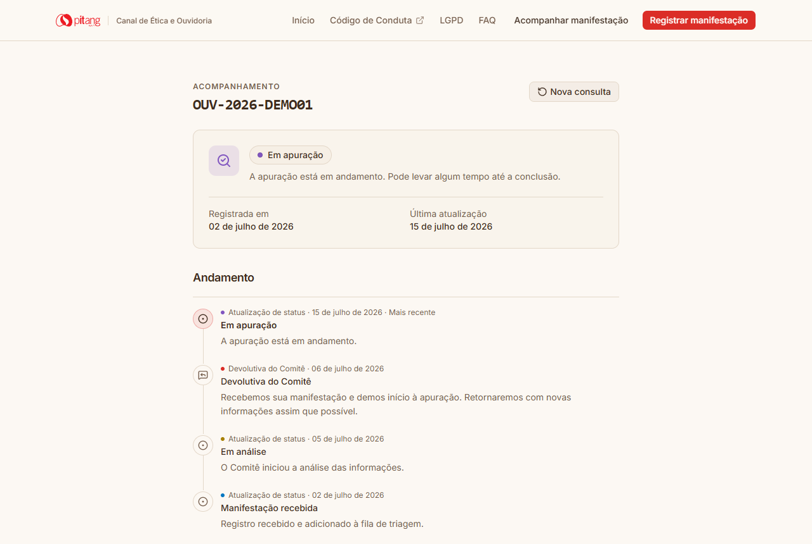
3 Vê o andamento
O estado atual ("Em apuração"), as datas e uma linha do tempo com as devolutivas do Comitê. Cada evento tem ícone e rótulo — a cor nunca informa sozinha. A página mostra só o andamento público: o relato e os dados internos ficam protegidos.
{kind=link}
{kind=link}
{kind=link}